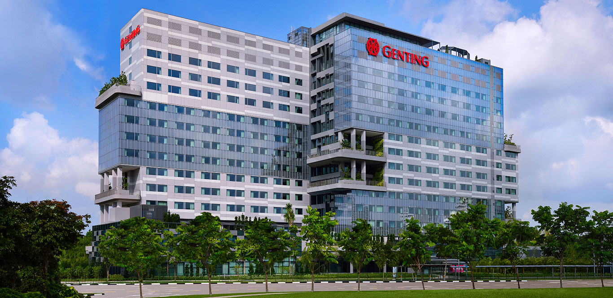
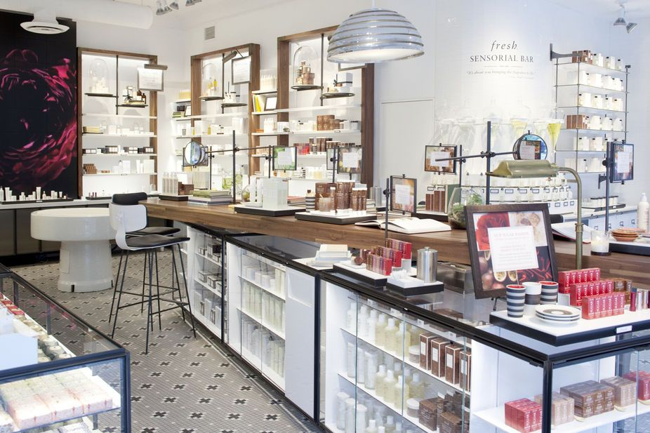
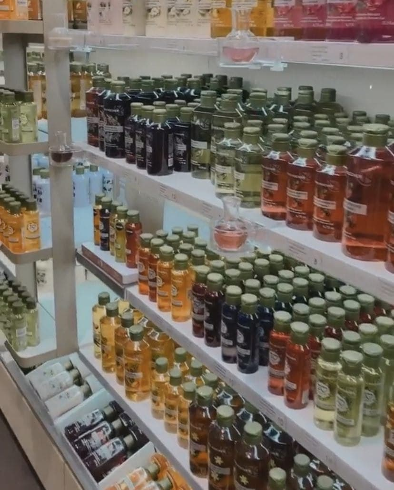

1. Food and Beverage
Banqueting at Genting Hotel Jurong East
I worked with my friend for a two days during a weekend and I served for three consecutive wedding banquets.
It was a tiring experience and since I stood for the whole day carrying heavy trays and plates and walked around serving food to guests, I had blisters on my feet even after the first day of my job.

2. Retail
Fresh
I worked in the Fresh department of Sephora for Luxasia for 9 days for their Black Friday sales with my friend.

Yves Rocher
I worked in the Compass One and Ngee Ann City branch for Luxasia for two months, January to February 2020, before the Covid-19 pandemic became more serious.

It was a fun experience but there were a lot of selling
points for many products to memorise and there were many customers that were extremely hard
to deal with and for the entire working duration, it was required to stand and restock products
from heavy cargo boxes which was a lot of manual work. It was also challenging dealing with money
because dealing with money is very dangerous. The joy of working there was that I could work in a cool
air-conditioning environment.